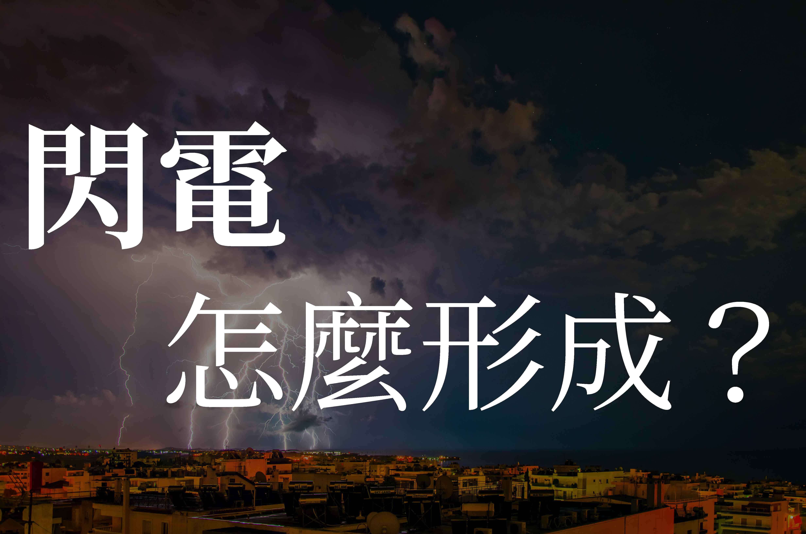

閃電，怎麼形成？
2017年6月13日

中央氣象局發布大雨特報，對流雲系發展旺盛，易有短時強降雨，今天大台北地區、宜蘭地區、北部山區及金門地區有局部大雨發生的機率，澎湖地區亦有局部較大雨勢，請注意雷擊及強陣風。(轉自2017年06月13日聯合新聞網)
最近豪雨不斷，說道雨，雷聲跟閃電必定脫離不了關係，但你有沒有想過，閃電是怎麼產生的？
閃電跟雷聲的關係
閃電 空氣摩擦產生的高壓靜電，主要可分成 7 種：
雲中放電
雲地之間放電
球狀閃電 (不討論)
珠狀閃電 (不討論)
枝狀閃電 (不討論)
正極閃電
超級閃電
閃電落地時，所帶的能量，會將空氣快速膨脹，產生類似音爆的聲波，這就是 雷聲
雲中放電
這種閃電是在雲層中的冰晶和水摩擦閃聲電位差，並在雲中放電，並不會落地，稱為雲中放電
雲地之間放電
這種閃電就是一般常見的落地閃電，成因是雲層中跟地面的電位差，導致雲中的電荷快速打落地面，這種閃電又分成正極和負極
正極閃電和超級閃電
正極閃電 的電荷與一般閃電相反，威力也非常強大，相對地也極少見。
超級閃電 可為正極或負極，通常威力是一般閃電的100倍，落地會造成極強的破壞
產生閃電
除了下雨會產生閃電，當火山爆發，火山灰會互相摩擦，產生電位差造成閃電
計算閃電的距離 (無聊人專用XD)
光速遠大於聲音速度，所以光速可忽略不計算，當看到閃電，在心中默數秒數，當聽到雷聲時，停止計秒，計算方法為：
秒數 x 340
聲音速度會因環境改變，所以這個公式仍有誤差
計算出來單位為：公尺
所以可以推論，當秒數越少，聲音越大